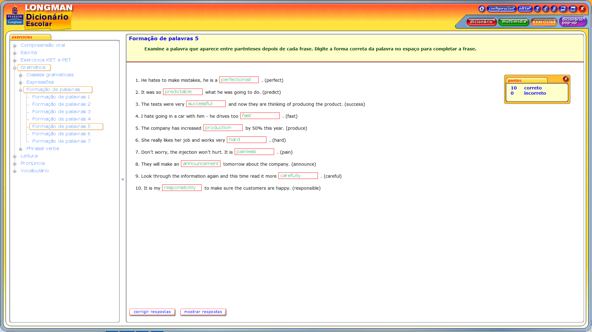

None of his inventions ever worked (invent) =
Nenhuma de suas invenções funcionou (inventar)
She made several appearances on the Tv during her career (appear).
= Ela fez diversas aparições na Tv durante sua carreira (aparecer).
The race was very competitive but he eventually won (compete) =
A corrida foi muito competitiva, mas ele acabou vencendo
He said he wanted to be a lawyer but he actually became a dentist (law) =
Ele disse que queria ser advogado. mas na verdade se tornou dentista (advogados)
The residents on the estate complained about the new parking restrictions
(reside) = Os moradores da propriedade reclamaram das novas restrições de
estacionamento (residir)
They waited anxiously for the news (anxious) = Eles esperaram ansiosamente
pela noticia (ansiosos)
consumption of electrical goods has increased this year.
(consume) = o consumo de produtos elétricos aumentou este ano.
(consumir)
It was a boring match, completely uneventual (event) = Foi uma
partida chata, completamente sem intercorrências (evento)
The teacher warned him about his behaviour (behave) =
A professora o alertou sobre seu comportamento
His addiction to tobacco was very strong (addict) = His addiction
to tobacco was very strong (addict)
There was a small improvement in the economy this year.
(improve) = Houve uma pequena melhora na economia este ano.
(melhorar) =
He put in a fine performance. (perform) = Ele fez uma ótima apresentação.
(executar)
There has been another decrease in the number of marriages in Britain.
(marry) = Houve outra diminuição no número de casamentos na Grã-Bretanha.
(casar)
The basement of the house was very large and they decided to convert it into a studio.
(base) = O porão da casa era muito grande e eles decidiram convertê-lo em um estúdio.
(base)
The police began their investigation by searching the house.
(investigate) = A polícia iniciou sua investigação vasculhando a casa.
(investigar)
They closed the building because it was unsafe.
(safe) = Eles fecharam o prédio porque era inseguro.
(seguro)
His injury was not as serious as first thought.
(injure) = Sua lesão não foi tão grave quanto se pensava inicialmente.
(ferir)
The house had large rooms and was very comfortable.
(comfort) = A casa tinha quartos grandes e era muito confortável.
(conforto)
They will make their decision tomorrow.
(decide) = Eles tomarão sua decisão amanhã.
(decidir)
He is a very sociable person and loves going out.
(social) = Ele é uma pessoa muito sociável e adora sair.
(social)
Nobody really believed his explanation.
(explain) = Ninguém realmente acreditou em sua explicação.
(explicar)
There is an enormous variety of animals in the Amazon.
(vary) = Há uma enorme variedade de animais na Amazônia.
(variar)
The flat was very spacious, with large rooms and a big balcony.
(space) = O apartamento era muito espaçoso, com quartos grandes e uma grande varanda.
(espaço)
For dessert they offered a selection of cheeses or ice-cream.
(select) = De sobremesa, eles ofereceram uma seleção de queijos ou sorvete.
(selecionar)
The house had been decorated very imaginatively.
(imaginative) = A casa foi decorada de forma muito imaginativa.
(imaginativo)
He was told that he required an operation to remove the bullet.
(operate) = Disseram-lhe que ele precisava de uma operação para remover a bala.
(operar)
Football attendances have increased again this year.
(attend) = As frequências de público no futebol aumentaram novamente este ano.
(frequentar)
The toxic gases from that factory are very harmful to plants and wildlife.
(harm) = Os gases tóxicos daquela fábrica são muito prejudiciais para as plantas e a vida selvagem.
(prejudicar)
"I don’t think your school report is satisfactory", said his father.
(satisfy) = "Eu não acho que seu boletim escolar é satisfatório", disse seu pai.
(satisfazer)
The disease is very infectious, so we must all keep away.
(infect) = A doença é muito infecciosa, então todos devemos nos afastar.
(infectar)
Nobody really believed his explanation.
(explain) = Ninguém realmente acreditou em sua explicação.
(explicar)
There is an enormous variety of animals in the Amazon.
(vary) = Há uma enorme variedade de animais na Amazônia.
(variar)
The flat was very spacious, with large rooms and a big balcony.
(space) = O apartamento era muito espaçoso, com quartos grandes e uma grande varanda.
(espaço)
For dessert they offered a selection of cheeses or ice-cream.
(select) = De sobremesa, eles ofereceram uma seleção de queijos ou sorvete.
(selecionar)
The house had been decorated very imaginatively.
(imaginative) = A casa foi decorada de forma muito imaginativa.
(imaginativo)
He was told that he required an operation to remove the bullet.
(operate) = Disseram-lhe que ele precisava de uma operação para remover a bala.
(operar)
Football attendances have increased again this year.
(attend) = As frequências de público no futebol aumentaram novamente este ano.
(frequentar)
The toxic gases from that factory are very harmful to plants and wildlife.
(harm) = Os gases tóxicos daquela fábrica são muito prejudiciais para as plantas e a vida selvagem.
(prejudicar)
"I don’t think your school report is satisfactory", said his father.
(satisfy) = "Eu não acho que seu boletim escolar é satisfatório", disse seu pai.
(satisfazer)
The disease is very infectious, so we must all keep away.
(infect) = A doença é muito infecciosa, então todos devemos nos afastar.
(infectar)

He hates to make mistakes, he is a perfectionist.
(perfect) = Ele odeia cometer erros, ele é um perfeccionista.
(perfeito)
It was so predictable what he was going to do.
(predict) = Era tão previsível o que ele ia fazer.
(prever)
The tests were very successful and now they are thinking of producing the product.
(success) = Os testes foram muito bem-sucedidos e agora eles estão pensando em produzir o produto.
(sucesso)
I hate going in a car with him - he drives too fast.
(fast) = Eu odeio andar de carro com ele - ele dirige muito rápido.
(rápido)
The company has increased production by 50% this year.
(produce) = A empresa aumentou a produção em 50% este ano.
(produzir)
She really likes her job and works very hard.
(hard) = Ela realmente gosta do trabalho dela e trabalha muito.
(difícil)
Don’t worry, the injection won’t hurt. It is painless.
(pain) = Não se preocupe, a injeção não vai doer. Ela é indolor.
(dor)
They will make an announcement tomorrow about the company.
(announce) = Eles vão fazer um anúncio amanhã sobre a empresa.
(anunciar)
Look through the information again and this time read it more carefully.
(careful) = Verifique as informações novamente e desta vez leia mais cuidadosamente.
(cuidadoso)
It is my responsibility to make sure the customers are happy.
(responsible) = É minha responsabilidade garantir que os clientes estejam satisfeitos.
(responsável)
The passengers survived but the driver was killed.
(drive) = Os passageiros sobreviveram, mas o motorista morreu.
(dirigir)
He is going to have a party to celebrate his retirement.
(retire) = Ele vai fazer uma festa para celebrar sua aposentadoria.
(aposentar)
I don’t like working for big organisations because you are just a number.
(organise) = Eu não gosto de trabalhar para grandes organizações, pois você é apenas um número.
(organizar)
She hates living away from her family and feels very unhappy.
(happy) = Ela odeia viver longe de sua família e se sente muito infeliz.
(feliz)
He was the fastest runner and won the race easily.
(easy) = Ele foi o corredor mais rápido e venceu a corrida com facilidade.
(fácil)
It is illegal to hunt protected animals.
(legal) = É ilegal caçar animais protegidos.
(legal)
The lights went out and there was complete darkness.
(dark) = As luzes se apagaram e houve completa escuridão.
(escuro)
He never remembers anything, he is very forgetful.
(forget) = Ele nunca se lembra de nada, ele é muito esquecido.
(esquecer)
When you see the palace at Versailles for the first time it is very impressive.
(impress) = Quando você vê o palácio de Versalhes pela primeira vez, é muito impressionante.
(impressionar)
He has been promoted to inspector.
(inspect) = Ele foi promovido a inspetor.
(inspecionar)
The flat needed to be cleaned; it was really **dirty**.
(dirt) = O apartamento precisava ser limpo; estava muito sujo.
He works as a computer **programmer**.
(programme) = Ele trabalha como programador de computador.
When the fire started, they had to get out very **quickly**.
(quick) = Quando o fogo começou, eles tiveram que sair muito rápido.
You won't get any money for that car, it is **worthless**.
(worth) = Você não vai ganhar nenhum dinheiro por aquele carro, ele não vale nada.
The increase in **investment** has created lots of new jobs.
(invest) = O aumento no investimento criou muitos novos empregos.
He talks to everyone; he is really **friendly**.
(friend) = Ele fala com todos; ele é muito amigável.
He has been hit by lightning twice. He is really **unlucky**.
(luck) = Ele já foi atingido por um raio duas vezes. Ele é muito azarado.
They have already started their **preparations** for Christmas.
(prepare) = Eles já começaram seus preparativos para o Natal.
It doesn't look very safe, I think it has been **badly** constructed.
(bad) = Não parece muito seguro, acho que foi mal construído.
She works as a **receptionist** in a big company.
(reception) = Ela trabalha como recepcionista em uma grande empresa.